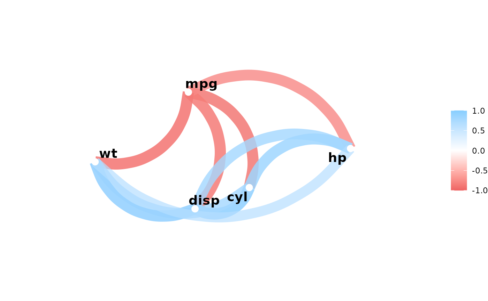

Apply a predicate function to each column of correlations. Columns that
evaluate to TRUE will be included in a call to focus.
Arguments
- x
Correlation data frame or object to be coerced to one via
as_cordf.- .predicate
A predicate function to be applied to the columns. The columns for which .predicate returns TRUE will be included as variables in
focus.- ...
Additional arguments to pass to the predicate function if not anonymous.
- mirror
Boolean. Whether to mirror the selected columns in the rows or not.
Examples
library(dplyr)
any_greater_than <- function(x, val) {
mean(abs(x), na.rm = TRUE) > val
}
x <- correlate(mtcars)
#> Correlation computed with
#> • Method: 'pearson'
#> • Missing treated using: 'pairwise.complete.obs'
x %>% focus_if(any_greater_than, .6)
#> # A tibble: 6 × 6
#> term mpg cyl disp hp wt
#> <chr> <dbl> <dbl> <dbl> <dbl> <dbl>
#> 1 drat 0.681 -0.700 -0.710 -0.449 -0.712
#> 2 qsec 0.419 -0.591 -0.434 -0.708 -0.175
#> 3 vs 0.664 -0.811 -0.710 -0.723 -0.555
#> 4 am 0.600 -0.523 -0.591 -0.243 -0.692
#> 5 gear 0.480 -0.493 -0.556 -0.126 -0.583
#> 6 carb -0.551 0.527 0.395 0.750 0.428
x %>% focus_if(any_greater_than, .6, mirror = TRUE) %>% network_plot()
